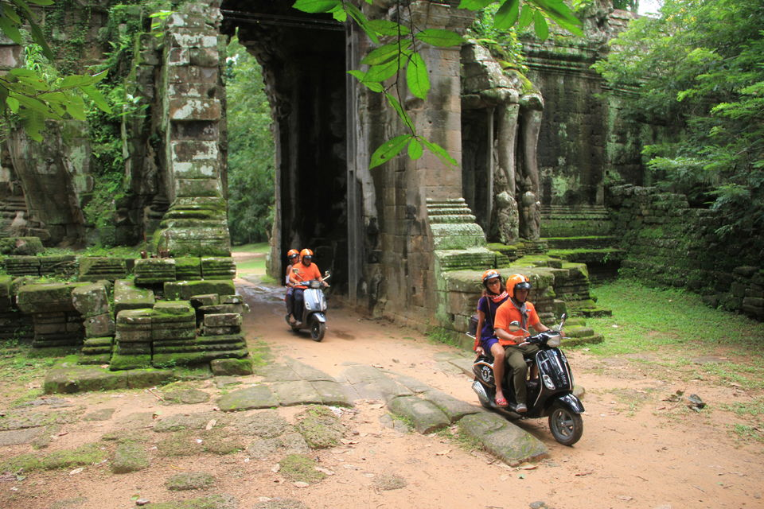

គេអាចធ្វើសកម្មភាពដូចជា៖

- ជិះកង់នៅខាងក្រោយប្រាសាទអង្គរវត្តនៅពេលព្រឹកព្រលឹម
- មើលព្រះអាទិត្យរះលើប្រាសាទអង្គរវត្ត
- មើលប្រាសាទសំខាន់ៗនិងតំបន់ពិសេសៗមួយចំនួននៃប្រាសាទអង្គរវត្ត
- ជិះកំសាន្តកាត់ប្រាសាទអង្គរដោយជៀសឆ្ងាយពីហ្វូងមនុស្ស
- សាកសមសម្រាប់គ្រួសារទាំងមូល
- រីករាយជាមួយនឹងទីជនបទដ៏ស្រស់ស្អាតនៃខេត្តសៀមរាបនិងសម្លឹងមើលវាលស្រែក្រោមមេឃពណ៌ខៀវដ៏ស្រស់ស្អាត
គេអាចធ្វើសកម្មភាពដូចជា៖
- មើលភូមិនេសាទអណ្តែតទឹកលើបឹងទន្លេសាប
- ធ្វើដំណើរតាមទូកនិងមើលទេសភាពពីលើទូក
- សង្កេតសកម្មភាពកសិកម្មនិងវារីវប្បកម្មក្នុងស្រុក
- រីករាយនឹងដំណើរកម្សាន្តពេលថ្ងៃលិចដ៏អស្ចារ្យនៅបឹងទន្លេសាប
- ទស្សនាកសិដ្ឋានចិញ្ចឹមក្រពើនិងត្រី
- បរិភោគអាហារប៊ូហ្វេជាមួយនឹងភេសជ្ជៈដែលដាក់បញ្ចូលទាំងអស់នៅលើ “ទូកព្រះនាងថារ៉ា” ដែលជាទូកធំជាងគេនៅលើបឹង។
- មើលទេសភាពនិងស្តាប់សំឡេងរបស់សកម្មភាពភូមិនានា
- រៀនអំពីវប្បធម៌និងប្រវត្តិសាស្ត្រក្នុងតំបន់
គេអាចធ្វើសកម្មភាពដូចជា៖

- ចាប់យកបទពិសោធន៍នៅពេលរាត្រីនៅខេត្តសៀមរាប
- ទស្សនាទីក្រុងពីដោយជៀសឆ្ងាយពីហ្វូងមនុស្ស
- ស្វែងរកទីកន្លែងប្លែកៗនានា
- ស្វែងយល់ពីប្រាសាទបុរាណអង្គរនិងគេចចេញពីហ្វូងមនុស្ស

គេអាចធ្វើសកម្មភាពដូចជា៖

- ទទួលយកបទពិសោធន៍ទីផ្សារក្នុងស្រុកនៅពេលលក់ដាច់បំផុត
- ទស្សនាវត្តព្រះពុទ្ធសាសនាដាច់ស្រយាលនិងទទួលបានព្រះពរដើម្បីជំនួយខាងវិញ្ញាណ
- ចាប់យកបទពិសោធន៍នៃដំណើរកំសាន្តនៅប្រាសាទអង្គរវត្តនៅឆ្ងាយពីហ្វូងមនុស្ស
- ជិះដើរលេងកម្សាន្តតាមដងផ្លូវនៅសៀមរាបនៅពេលយប់ដោយម៉ូតូ
© បង្កើត និង តែងដោយ
រចនាបទ & អភិវឌ្ឍដោយ ដើរលេងសៀមរាប